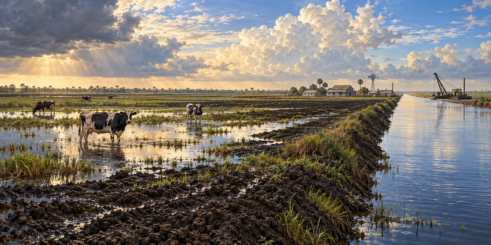

The Storms That Changed the Everglades Agricultural Area
Black Gold, Crying Cows, and the Farmland Two Hurricanes Helped Create

In 1947, widespread flooding across Central and South Florida became the subject of a report remembered for its cover illustration of a cow standing in floodwater. The “Crying Cow” report helped make the need for regional flood control visible. Congress authorized the Central and Southern Florida Project the following year.
A Century of Trying to Drain the Swamp
Proposals to drain the Everglades grew into a long sequence of land purchases, canals and drainage works. Removing water exposed dark organic soil, often called muck. Turning that soil into dependable farmland required more than digging canals: growers also had to understand nutrients, water levels and seasonal conditions.
A Discovery Made Despite the Hurricanes
Researchers at the Everglades Research and Education Center studied why crops sometimes failed in apparently rich organic soil. Micronutrient deficiencies, including copper, were one problem. Crop trials and soil research helped growers adapt farming methods to a landscape that behaved differently from ordinary mineral soil.
The Same Storms, a Second Time
The 1926 and 1928 hurricanes devastated communities around Lake Okeechobee. Dike construction and later regional water-control works reduced risks and supported existing farming, but did not make the area free of floods. Belle Glade, Clewiston and nearby communities developed within that managed-water landscape.
A Pamphlet That Built a Farming Region
The 1947 floods showed that lake protection alone could not address the region’s water problems. The 1948 project expanded flood-control infrastructure across South Florida. UF/IFAS describes the Everglades Agricultural Area as approximately 700,000 acres south of Lake Okeechobee, rather than the smaller acreage in the source draft.
Matching Crops to the Seasons
Sugarcane is a major EAA crop, alongside vegetables, sod and rice. South Florida’s commercial vegetable production often takes advantage of the cooler winter season. Rice can be grown as a summer rotation crop in flooded fields. These are different crop systems, rather than a simple alternation of dry-season sugarcane and wet-season lettuce.
What Protecting the Farmland Costs the Glades
Excess nutrients from farms and other sources can alter the naturally nutrient-poor Everglades. Agricultural best-management practices and stormwater treatment areas are part of efforts to reduce phosphorus before water moves south. Water operations must balance flood protection, supply, ecological conditions and water quality; lowering the lake is not simply a step taken to protect farmland before every forecast hurricane.
Quick Facts
| What it is | Approximately 700,000 acres south of Lake Okeechobee (UF/IFAS) |
|---|---|
| Founding farm towns | Moore Haven, Belle Glade, Clewiston |
| Crying cow booklet | 1947 report documenting regional flood damage |
| 1948 | Central and Southern Florida Project authorized |
| Crops | Sugarcane, vegetables, sod and rice |
Did You Know?
A pamphlet about a crying cow helped win federal flood-control money.
Rich organic soil can still lack nutrients essential to crops.
Vocabulary
Muck: dark, rich organic soil formed from long-decayed plants.
Everglades Agricultural Area: the farmland south of Lake Okeechobee drained for agriculture.
Water Conservation Areas: large diked marsh basins south of the EAA that store water.
Discussion Questions
1. How did two hurricanes and a flood end up creating a farming region?
2. What did the muck soil’s copper deficiency teach early researchers?
Related Articles
FLH-0004 — The Okeechobee Hurricane of 1928
FLH-0025 — The Flood That Changed South Florida
FLH-0027 — Why Lake Okeechobee Became Dangerous
FLH-0028 — Hurricanes and the Everglades
FLH-0038 — Farming After the Flood
Sources
UF/IFAS Everglades Research and Education Center. “History.” erec.ifas.ufl.edu
Specialty Crop Grower / Southeast AgNet. “On Tour in the Everglades Agricultural Area.” specialtycropgrower.com
Thurlow-Lippisch, Jacqui. “Everglades Agricultural Area.” (crying cow booklet account). jacquithurlowlippisch.com
Palm Beach County History Online. “Draining the Everglades.” pbchistoryonline.org
Organization of American States. “Case Studies: Everglades Agricultural Development.” oas.org
SFWMD — Flood control and the Crying Cow report
UF/IFAS — EAA organic soils and acreage